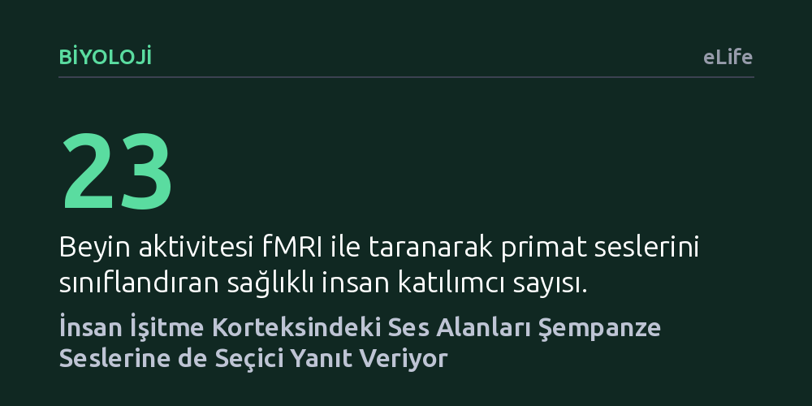

BIYOLOJI · eLife · 2026-09-08
Araştırmacılar, insan beyninde kendi türümüzün seslerine özelleşmiş işitme merkezlerinin yakın primatların seslerine nasıl tepki verdiğini inceledi. fMRI ölçümleri, temporal ses alanlarının özellikle akustik ve evrimsel açıdan insana en yakın olan şempanze seslerine de seçici biçimde duyarlı olduğunu ortaya koydu.
İnsan beynindeki ses tanıma merkezlerinin yalnızca kendi türümüze özgü olmadığını, milyonlarca yıllık evrimsel ve akustik akrabalık izlerini hâlen koruduğunu gösterir.

İnsan işitme korteksinde şakak bölgesine denk gelen temporal ses alanları (TVA), uzun süredir öncelikli olarak insan konuşması ve vokal seslerine odaklanmış bölgeler olarak biliniyordu. İnsan beyninin kendi türdeşlerine ait sesleri diğer çevresel seslerden hızla ayırt etmesi hayati bir öneme sahip olsa da, bu mekanizmanın evrimsel kökenleri ve diğer türlerle paylaştığı ortak paydalar yeterince araştırılmamıştı.
Köpek veya maymun gibi farklı memelilerde kendi türdeşlerinin seslerine duyarlı kortikal bölgelerin varlığı daha önce gösterilmişti. Ancak insanların diğer primat seslerini dinlerken temporal korteksinde nasıl bir ayrım yaptığı, bu alanların sırf insan sesine mi kilitlendiği yoksa evrimsel ve akustik yakınlığa göre esneyip esnemediği net bir yanıt bekliyordu.
Araştırma ekibi, 23 sağlıklı katılımcıyı fMRI (işlevsel manyetik rezonans görüntüleme) cihazına alarak dört farklı primat türüne ait ses kayıtlarını dinletti: İnsan, şempanze, bonobo ve evrimsel olarak daha uzak bir akraba olan rhesus şebeği. Katılımcılardan dinledikleri her sesin hangi türe ait olduğunu tahmin etmeleri istendi. Her türden 18'er adet olmak üzere toplam 72 ses rastgele sırada sunuldu.
Seslerin şiddeti, perdesi veya tınısı gibi yüzeysel akustik farklılıkların beyin aktivitesini yanıltmasını engellemek amacıyla gelişmiş istatistiksel modeller uygulandı. Mahalanobis mesafesi ve ayrımcı akustik analizlerle temel frekans, bant genişliği ve enerji değişimi gibi parametreler denklemlerden arındırıldı. Böylece temporal korteksteki sinirsel tepkilerin ham gürültüye değil, doğrudan türe özgü ses işlemlemeye bağlı olup olmadığı sınandı.
Görüntüleme sonuçları, temporal ses alanlarının yalnızca insana değil, şempanze seslerine de belirgin bir seçicilikle yanıt verdiğini gösterdi. Beynin her iki tarafındaki ön üst temporal girus bölgesinde yer alan toplam 14 alt bölge, katılımcılar şempanze seslerini işitirken diğer hayvan seslerine ve hatta diğer primatlara kıyasla belirgin şekilde daha yüksek aktivite sergiledi.
Dikkat çekici bir diğer bulgu ise genetik olarak insana şempanzeler kadar yakın olan bonoboların seslerinin bu seçici tepkiyi uyandırmaması oldu. Katılımcılar bonobo seslerini ayırt etmekte şans düzeyinin altında kaldı. Çünkü bonoboların anatomik olarak daha kısa olan gırtlak yapıları seslerini belirgin biçimde tizleştiriyor ve insan işitme korteksinin alışık olduğu temel frekans aralığından uzaklaştırıyordu. Akustik olarak insan sesine daha yakın bir profil çizen şempanze sesleri ise insan temporal alanlarında doğrudan karşılık buldu.
Bu sonuçlar, insan beynindeki ses alanlarının dış dünyaya bütünüyle yalıtılmış olmadığını; vokal iletişim sistemimizin evrimsel akrabalık ve akustik benzerliklerle şekillenen esnek bir altyapıya dayandığını gösteriyor. İnsan temporal korteksi, sadece kendi türümüzü tanımakla yetinmeyip ses yapısı ve biyolojik kökeni insana en yakın duran şempanzeleri de işitsel olarak önceliklendiriyor.
Bulgular, insan ses algısının ve nihayetinde konuşma yetisinin sıfırdan ortaya çıkmadığını, primat atalarımızdan aktarılan nöral donanımın üzerine inşa edildiğini destekliyor. Bonoboların seslerinin tanınamaması ise sesin beyinde işlenmesinde salt genetik yakınlığın yetmediğini, sesin fiziksel frekans yapısının da işitme sistemimizin uyum sağladığı aralıkla örtüşmesi gerektiğini ortaya koyuyor.